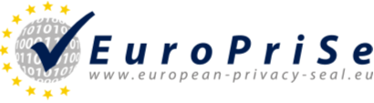
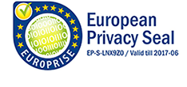

|  |
PressemitteilungVerleihung des 1. „European Privacy Seal“ Im Rahmen der Jubiläumsveranstaltung zum 30-jährigen Bestehen des Landesdatenschutzgesetzes Schleswig-Holstein wird vom Europäischen Datenschutzbeauftragten Peter Hustinx das erste Europäische Datenschutzgütesiegel an die Meta-Suchmaschine ixquick.com verliehen.Kiel, 14. Juli 2008 Die Meta-Suchmaschine Ixquick, die ihre Vereinbarkeit mit den Anforderungen des Europäischen Datenschutzrechts nachgewiesen hat, erhält das erste European Privacy Seal (EuroPriSe), das Europäische Datenschutzgütesiegel für IT-Produkte und IT-basierte Dienste. Vertrauensmangel ist eine große Herausforderung in unserer Informationsgesellschaft – ausgelöst durch zunehmende elektronische Überwachung und wachsende technische Kontrollmöglichkeiten. Informationstechnologien, die unser tägliches und berufliches Leben erleichtern sollen, werden immer komplexer und sind teilweise überhaupt nicht mehr durchschaubar. Das Zertifikat „EuroPriSe“ bietet eine von einer unabhängigen Stelle geprüfte transparente Orientierungshilfe für Verbraucher und Unternehmen bei der Auswahl von datenschutzfreundlichen IT-Produkten und Dienstleistungen. Das europäische Projekt EuroPriSe – European Privacy Seal – wird von der Europäischen Kommission im Rahmen des eTEN-Programms mit 1,2 Mio. € gefördert. Das EuroPriSe-Konsortium besteht aus neun Partnern aus acht europäischen Ländern, geführt vom Unabhängigen Landeszentrum für Datenschutz Schleswig-Holstein (ULD). EuroPriSe bietet ein einheitliches, europaweites Produktaudit zur Zertifizierung von datenschutzfreundlichen IT-Produkten und IT-basierten Diensten auf der Grundlage des europäischen Datenschutzrechts. Das Europäische Datenschutzgütesiegel wird nach erfolgreichem Durchlaufen eines zweistufigen, qualitätsgesicherten Verfahrens verliehen: Auf eine Begutachtung des Produkts oder Dienstes durch hierfür zugelassene rechtliche und technische IT-Sachverständige folgt eine Validierung durch eine unabhängige Zertifizierungsstelle. Dr. Thilo Weichert, Landesbeauftragter für Datenschutz Schleswig-Holstein und Leiter des ULD: “Durch die Einführung transparenter und überprüfbarer Verfahrensschritte unter Einbeziehung unabhängiger Zertifizierungsstellen bietet EuroPriSe ein verlässliches Datenschutzzertifikat auf hohem Niveau für Endnutzer.” Kirsten Bock, EuroPriSe-Projektmanagerin, ergänzt: „Das Interesse am EuroPriSe-Verfahren ist groß. 120 Sachverständige haben bisher an den EuroPriSe-Schulungen teilgenommen. Über 40 Gutachter aus 10 EU-Mitgliedstaaten haben das Zulassungsverfahren bereits erfolgreich abgeschlossen und dürfen IT-Produkte und Dienste nach Maßgabe der Kriterien des Europäischen Datenschutzgütesiegels begutachten. 18 internationale Produkte befinden sich im Pilotverfahren und weitere Anträge liegen vor. Jetzt gilt es, das Siegel den Verbrauchern bekannt zu machen.“ Das erste EuroPriSe-Gütesiegel wurde heute morgen durch Peter Hustinx, den Europäischen Datenschutzbeauftragten, an die europäische Meta-Suchmaschine Ixquick verliehen.  Ixquick ist eine Meta-Suchmaschine (www.ixquick.com), die Nutzern Recherchen im Internet ermöglicht, indem die Suchanfragen an verschiedene Suchmaschinen weitergeleitet, die Ergebnisse kombiniert und dem anfragenden Nutzer bereitgestellt werden. Ixquick funktioniert wie ein Proxy, d.h. die IP-Adresse des Nutzers wird nicht an die angefragten Suchmaschinen weitergeben. Personenbezogene Daten, einschließlich der IP-Adresse des Nutzers, werden nach 48 Stunden gelöscht. Peter Hustinx, Europäischer Datenschutzbeauftragter, lobte bei der Preisübergabe: „Das Europäische Datenschutzgütesiegel unterstützt die Umsetzung des europäischen Datenschutzrechts und zeichnet datenschutzfreundliche IT-Produkte und IT-basierte Dienste für Geschäftskunden und Verbraucher sichtbar aus. Die Verleihung des ersten Europäischen Gütesiegels an die Meta-Suchmaschine Ixquick ist ein Meilenstein für die Umsetzung des Datenschutzes im Internet und verdient große Anerkennung.“ EU Kommissarin Viviane Reding begrüßte die Einführung des Europäischen Datenschutzgütesiegels mit seinen hohen Datenschutzanforderungen in einer anlässlich der Verleihung des Siegels an Ixquick abgegebenen Stellungnahme: „Die Europäische Kommission begrüßt die Einführung des Europäischen Datenschutzgütesiegels mit seinen hohen Datenschutzanforderungen. Das Siegel erlaubt Verbrauchern und Unternehmern datenschutzfreundliche Produkte und Dienste sicher zu erkennen. Die Verleihung des Ersten Europäischen Datenschutzgütesiegels an die Metasuchmaschine Ixquick unterstreicht, dass die Balance zwischen Unternehmerinteressen und dem Schutz personenbezogener Daten von Internetnutzern möglich ist.“ „Suchmaschinen haben in der Datenschutzdebatte immer eine große Rolle gespielt“, sagte Ixquicks CEO Robert Beens. Die Vorzüge des EuroPriSe-Siegels seien offensichtlich: „Entscheidend ist, dass das EuroPriSe-Siegel unser hohes Datenschutzniveau und die Datenschutzzusagen, die wir unseren Nutzern geben, bestätigt. Datenschutz und relevante Suchergebnisse – darum geht es bei Ixquick. Wir sind sehr stolz darauf, die Ersten zu sein, die ein Europäisches Datenschutzgütesiegel erhalten.“ Das EuroPriSe-Siegel ist in enger Kooperation mit europäischen Datenschutzaufsichtsbehörden entwickelt worden. Es ist abzusehen, dass das Europäische Datenschutzgütesiegel sich sowohl auf europäischer, auf internationaler und auf nationaler Ebene zu einem wichtigen Instrument des Datenschutzes und des Schutzes der Privatsphäre entwickeln wird. Über EuroPriSeDas EuroPriSe-Konsortium, das aus 9 Partnern aus 8 EU-Mitgliedsstaaten besteht, wird vom Unabhängigen Landeszentrum für Datenschutz Schleswig-Holstein (ULD) geleitet. Neben dem ULD sind Projektpartner die Datenschutzaufsichtsbehörden von Madrid, Agencia de Protección de Datos de la Communidad de Madrid (APDCM), und Frankreich, Commission Nationale de l’Informatique et de Libertés (CNIL), die österreichische Akademie der Wissenschaften und die London Metropolitan-Universität, Borking Consultancy aus den Niederlanden, Ernst and Young AB aus Schweden, TüV Informationstechnik GmbH aus Deutschland und VaF s.r.o. aus der Slowakei. Weitere Informationen können abgerufen werden unter www.european-privacy-seal.eu. Über IxquickIxquick (www.ixquick.com) ist eine internationale Suchmaschine mit einer branchenweit führenden Datenschutzstrategie und in 17 Sprachen verfügbar. Es ist die erste Suchmaschine, die personenbezogene Daten der Nutzer – einschließlich IP-Adressen – nach 48 Stunden löscht. Ixquick wurde im Jahre 1998 gestartet und wird von der Surfboard Holding BV, einem niederländischen Unternehmen, betrieben. Bei Presseanfragen nehmen Sie bitte Kontakt auf zu |